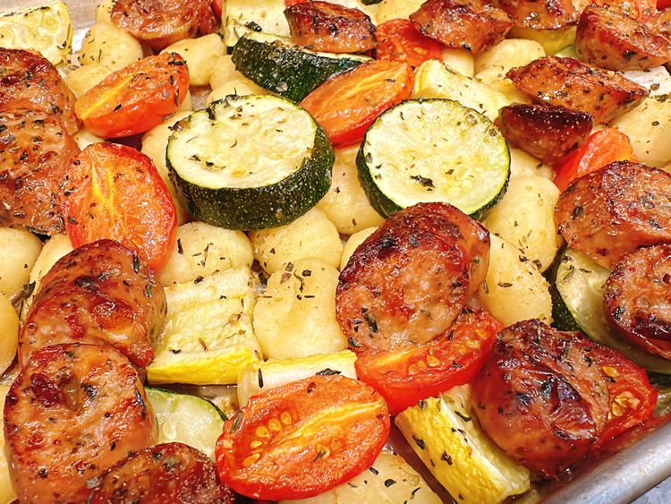

Sheet Pan Summer Gnocchi

Description
This sheet pan summer gnocchi highlights colorful, vibrant summer vegetables. Adding tomato basil chicken sausage makes it a complete dinner.
Ingredients
- 12 ounces prepared gnocchi
- 1 zucchini, sliced into 1/2-inch thick coins
- 1 summer squash, halved lengthwise, and sliced into 1/2-inch thick half-moons
- 1 small onion, cut into chunks
- 1 pint cherry tomatoes, halved
- 1 pound tomato basil chicken sausage, cut into 1/2-inch thick coins
- 2 tablespoons olive oil
- 3 garlic cloves, minced
- 1/2 teaspoon Italian seasoning
- 3 tablespoons freshly prepared pesto
Steps
- Heat oven to 425 degrees F (220 degrees C).
- Place gnocchi, zucchini, summer squash, onion, tomatoes, and sausage on a rimmed sheet pan. Drizzle olive oil evenly over mixture. Add garlic and Italian seasoning; toss to coat.
- Bake in the preheated oven until vegetables are tender, about 35 minutes. Dollop pesto over the mixture, toss to combine, and serve immediately.